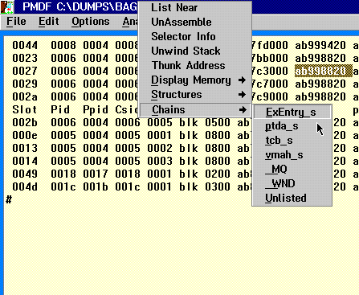

Standard CUA mouse selection and highlighting are implemented. Marked items may be dragged and dropped onto the command line.
A double-click with mouse button 1 will highlight a blank delimited string.
A single click with mouse button 2 will display pop-up menu whose items take the highlighted text in the scrollable output window as input.
The following diagram shows an example of the mouse pop-up menu. In this example the Structures option is displayed. This particular option acts as a supplement to the Dump Formatter .D command. For it to work correctly, the Structure Definition Files (*.SDF) are required to be present in the same directory as the Dump Formatter. These files are build level dependent and will only display correct information if matched to the dump level. There is no validation performed by these displays. The user must ensure that an appropriate input address is highlighted. 